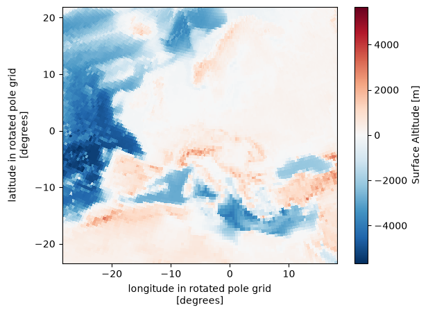

%load_ext autoreload
%autoreload 2
Examples of CORDEX-CMIP6 cmorization#
Introduction#
This notebook demonstrates how climate model output can be reformatted and standardized using CMOR (Climate Model Output Rewriter) for the CORDEX-CMIP6 framework.
What is CMORization?
CMORization is the process of converting raw model output into standardized netCDF files
It ensures compliance with CF (Climate and Forecast) conventions
It automatically handles unit conversions, time resampling, and metadata standardization
In this notebook, we’ll show examples of how to cmorize different types of climate data (fixed fields, monthly, and sub-daily data).
!ls ../Tables
CORDEX-CMIP6_1hr.json CORDEX-CMIP6_formula_terms.json
CORDEX-CMIP6_3hr.json CORDEX-CMIP6_fx.json
CORDEX-CMIP6_6hr.json CORDEX-CMIP6_grids.json
CORDEX-CMIP6_CV.json CORDEX-CMIP6_mon.json
CORDEX-CMIP6_coordinate.json CORDEX-CMIP6_remo_example.json
CORDEX-CMIP6_day.json
Controlled Vocabulary (CV)#
The CORDEX-CMIP6_CV.json file defines the controlled vocabulary and required global attributes that the CMOR3 library uses for rewriting and validating the model output. This ensures all CORDEX-CMIP6 datasets follow the same conventions and contain consistent metadata.
Below we show the required global attributes that must be present in every CORDEX-CMIP6 dataset:
import json
import pprint
from IPython.display import JSON
# Opening JSON file
with open("../Tables/CORDEX-CMIP6_CV.json") as json_file:
CV = json.load(json_file)["CV"]
# JSON(CV['required_global_attributes'])
pprint.pprint(CV["required_global_attributes"])
['activity_id',
'contact',
'Conventions',
'creation_date',
'domain_id',
'domain',
'driving_experiment_id',
'driving_experiment',
'driving_institution_id',
'driving_source_id',
'driving_variant_label',
'frequency',
'grid',
'institution',
'institution_id',
'license',
'mip_era',
'product',
'project_id',
'source',
'source_id',
'source_type',
'tracking_id',
'variable_id',
'version_realization']
CMORization Examples#
We use the cordex.cmor module to create examples of CORDEX-CMIP6 compliant datasets. The following section defines three functions that demonstrate how to cmorize different types of climate data:
Fixed fields (fx): Time-independent data like topography (orog)
Monthly data (mon): Variables averaged over monthly timescales (e.g., temperature)
Sub-daily data: Hourly, 3-hourly, and 6-hourly data that can be automatically resampled
Each function shows how to:
Specify the input variable mapping
Define the CMOR table for the output format
Handle coordinate systems and domain information
Convert units as needed
Example 1: Fixed Fields (fx) - Topography#
This example demonstrates CMORization of fixed fields, using topography (orog) as an example. Fixed fields are time-independent variables that describe static properties of the domain, such as terrain height or land-sea masks.
We’ll create the file, then inspect it using xarray and various validation tools:
f = test_cmorizer_fx()
Generated Filename#
The filename follows the CORDEX-CMIP6 naming convention, encoding information about the domain, driving model, and version:
f
'CORDEX/CORDEX-CMIP6/DD/EUR-12/GERICS/ERA5/evaluation/r1i1p1f1/REMO2020-2-2/v1-r1/fx/orog/v20261118/orog_EUR-12_ERA5_evaluation_r1i1p1f1_GERICS_REMO2020-2-2_v1-r1_fx.nc'
# Display the netCDF header showing all metadata and attributes
!ncdump -h $f
netcdf orog_EUR-12_ERA5_evaluation_r1i1p1f1_GERICS_REMO2020-2-2_v1-r1_fx {
dimensions:
rlat = 412 ;
rlon = 424 ;
bnds = 2 ;
vertices = 4 ;
variables:
double rlat(rlat) ;
rlat:units = "degrees" ;
rlat:axis = "Y" ;
rlat:long_name = "latitude in rotated pole grid" ;
rlat:standard_name = "grid_latitude" ;
double rlon(rlon) ;
rlon:units = "degrees" ;
rlon:axis = "X" ;
rlon:long_name = "longitude in rotated pole grid" ;
rlon:standard_name = "grid_longitude" ;
int rotated_latitude_longitude ;
rotated_latitude_longitude:grid_mapping_name = "rotated_latitude_longitude" ;
rotated_latitude_longitude:grid_north_pole_latitude = 39.25 ;
rotated_latitude_longitude:grid_north_pole_longitude = -162. ;
rotated_latitude_longitude:north_pole_grid_longitude = 0. ;
rotated_latitude_longitude:earth_radius = 6371229. ;
double lat(rlat, rlon) ;
lat:standard_name = "latitude" ;
lat:long_name = "latitude" ;
lat:units = "degrees_north" ;
lat:missing_value = 1.e+20 ;
lat:_FillValue = 1.e+20 ;
lat:bounds = "vertices_lat" ;
double lon(rlat, rlon) ;
lon:standard_name = "longitude" ;
lon:long_name = "longitude" ;
lon:units = "degrees_east" ;
lon:missing_value = 1.e+20 ;
lon:_FillValue = 1.e+20 ;
lon:bounds = "vertices_lon" ;
double vertices_lat(rlat, rlon, vertices) ;
vertices_lat:units = "degrees_north" ;
vertices_lat:missing_value = 1.e+20 ;
vertices_lat:_FillValue = 1.e+20 ;
double vertices_lon(rlat, rlon, vertices) ;
vertices_lon:units = "degrees_east" ;
vertices_lon:missing_value = 1.e+20 ;
vertices_lon:_FillValue = 1.e+20 ;
float orog(rlat, rlon) ;
orog:standard_name = "surface_altitude" ;
orog:long_name = "Surface Altitude" ;
orog:comment = "The surface called \'surface\' means the lower boundary of the atmosphere. Altitude is the (geometric) height above the geoid, which is the reference geopotential surface. The geoid is similar to mean sea level." ;
orog:units = "m" ;
orog:cell_methods = "area: mean" ;
orog:cell_measures = "area: areacella" ;
orog:missing_value = 1.e+20f ;
orog:_FillValue = 1.e+20f ;
orog:grid_mapping = "rotated_latitude_longitude" ;
orog:coordinates = "lat lon" ;
// global attributes:
:Conventions = "CF-1.11" ;
:activity_id = "DD" ;
:contact = "gerics-cordex@hereon.de" ;
:creation_date = "2026-11-18T10:46:21Z" ;
:domain = "Europe" ;
:domain_id = "EUR-12" ;
:driving_experiment = "reanalysis simulation of the recent past" ;
:driving_experiment_id = "evaluation" ;
:driving_institution_id = "ECMWF" ;
:driving_source = "ECMWF Reanalysis v5" ;
:driving_source_id = "ERA5" ;
:driving_variant_label = "r1i1p1f1" ;
:experiment_id = "evaluation" ;
:external_variables = "areacella" ;
:frequency = "fx" ;
:grid = "Rotated-pole latitude-longitude with 0.11 degree grid spacing" ;
:history = "2026-11-18T10:46:21Z ;rewrote data to be consistent with CORDEX-CMIP6 for variable orog found in table fx." ;
:institution = "Climate Service Center Germany, Helmholtz Centre hereon GmbH, Hamburg, Germany" ;
:institution_id = "GERICS" ;
:label = "REMO2020 v2.2" ;
:mip_era = "CMIP6" ;
:product = "model-output" ;
:project_id = "CORDEX-CMIP6" ;
:references = "https://www.remo-rcm.de" ;
:run_variant = "1st realization" ;
:source = "Regional Climate Model REMO, version 2.2, hydrostatic configuration with MACv2 aerosol forcing and Fresh-water Lake model (FLake) (2023)" ;
:source_id = "REMO2020-2-2" ;
:source_type = "ARCM" ;
:table_id = "fx" ;
:table_info = "Name: CORDEX-CMIP6_fx.json; Creation Date:(17 November 2026) MD5:217d9b6a10932596721d374d5f67b653" ;
:title = "GERICS REMO2020-2-2 downscaling of ERA5 evaluation for CORDEX-CMIP6 EUR-12" ;
:tracking_id = "hdl:21.14103/1ef7003c-d530-4fc2-b19c-75cb4f2ee948" ;
:variable_id = "orog" ;
:version_realization = "v1-r1" ;
:license = "https://cordex.org/data-access/cordex-cmip6-data/cordex-cmip6-terms-of-use" ;
:cmor_version = "3.16.0" ;
}
Interactive Dataset Exploration with xarray#
The xarray dataset representation provides an interactive way to explore the dataset structure, dimensions, variables, and attributes:
ds = xr.open_dataset(f)
ds
<xarray.Dataset> Size: 15MB
Dimensions: (rlat: 412, rlon: 424, vertices: 4)
Coordinates:
* rlat (rlat) float64 3kB -23.38 -23.27 ... 21.73 21.84
* rlon (rlon) float64 3kB -28.38 -28.27 ... 18.05 18.16
lat (rlat, rlon) float64 1MB ...
lon (rlat, rlon) float64 1MB ...
Dimensions without coordinates: vertices
Data variables:
rotated_latitude_longitude int32 4B ...
vertices_lat (rlat, rlon, vertices) float64 6MB ...
vertices_lon (rlat, rlon, vertices) float64 6MB ...
orog (rlat, rlon) float32 699kB ...
Attributes: (12/36)
Conventions: CF-1.11
activity_id: DD
contact: gerics-cordex@hereon.de
creation_date: 2026-11-18T10:46:21Z
domain: Europe
domain_id: EUR-12
... ...
title: GERICS REMO2020-2-2 downscaling of ERA5 evaluati...
tracking_id: hdl:21.14103/1ef7003c-d530-4fc2-b19c-75cb4f2ee948
variable_id: orog
version_realization: v1-r1
license: https://cordex.org/data-access/cordex-cmip6-data...
cmor_version: 3.16.0ds.orog.plot()
<matplotlib.collections.QuadMesh at 0x73c928f6a570>

In the following cell, we will demonstrate how to check the cmorized datasets using three different tools: cdo verifygrid, cf-checker, and the IOOS compliance-checker including the WCRP plugin:
!cdo verifygrid $f
cdo verifygrid: Grid consists of 174688 (424x412) cells (type: curvilinear), of which
cdo verifygrid: 174688 cells have 4 vertices
cdo verifygrid: lon : -44.59386 to 64.96438 degrees
cdo verifygrid: lat : 21.98783 to 72.585 degrees
cdo verifygrid: Processed 1 variable [0.12s 587M]
!cfchecks $f
CHECKING NetCDF FILE: CORDEX/CORDEX-CMIP6/DD/EUR-12/GERICS/ERA5/evaluation/r1i1p1f1/REMO2020-2-2/v1-r1/fx/orog/v20261118/orog_EUR-12_ERA5_evaluation_r1i1p1f1_GERICS_REMO2020-2-2_v1-r1_fx.nc
=====================
Using CF Checker Version 4.1.0
Checking against CF Version CF-1.8
Using Standard Name Table Version 95 (2026-09-16T04:56:46Z)
Using Area Type Table Version 13 (20 March 2025)
Using Standardized Region Name Table Version 5 (12 November 2024)
ERROR: (2.6.1): This netCDF file does not appear to contain CF Convention data.
WARN: (7.1): Boundary var vertices_lat should not have attribute units
WARN: (7.1): Boundary var vertices_lon should not have attribute units
------------------
Checking variable: rlat
------------------
------------------
Checking variable: rlon
------------------
------------------
Checking variable: rotated_latitude_longitude
------------------
------------------
Checking variable: lat
------------------
------------------
Checking variable: lon
------------------
------------------
Checking variable: vertices_lat
------------------
WARN: (7.1): Boundary Variable vertices_lat should not have _FillValue attribute
WARN: (7.1): Boundary Variable vertices_lat should not have missing_value attribute
------------------
Checking variable: vertices_lon
------------------
WARN: (7.1): Boundary Variable vertices_lon should not have _FillValue attribute
WARN: (7.1): Boundary Variable vertices_lon should not have missing_value attribute
------------------
Checking variable: orog
------------------
ERRORS detected: 1
WARNINGS given: 6
INFORMATION messages: 0
The compliance checker can be used to validate the cmorized file against the CORDEX-CMIP6 standard. Note that these tests should return no high priority issues. The following command runs the compliance checker with the appropriate tests:
!compliance-checker --test=cf:1.11 --test=wcrp_cordex_cmip6 $f
Running Compliance Checker on the datasets from: ['CORDEX/CORDEX-CMIP6/DD/EUR-12/GERICS/ERA5/evaluation/r1i1p1f1/REMO2020-2-2/v1-r1/fx/orog/v20261118/orog_EUR-12_ERA5_evaluation_r1i1p1f1_GERICS_REMO2020-2-2_v1-r1_fx.nc']
Downloading data from 'https://raw.githubusercontent.com/WCRP-CORDEX/cordex-cmip6-cmor-tables/main/Tables/CORDEX-CMIP6_coordinate.json' to file '/home/runner/.wcrp_metadata/cordex-cmip6-cmor-tables/CORDEX-CMIP6_coordinate.json'.
SHA256 hash of downloaded file: ebdc7e928412179be6db384f3b3955383248a0d9581712ad91eed1730319bf4a
Use this value as the 'known_hash' argument of 'pooch.retrieve' to ensure that the file hasn't changed if it is downloaded again in the future.
Downloading data from 'https://raw.githubusercontent.com/WCRP-CORDEX/cordex-cmip6-cmor-tables/main/Tables/CORDEX-CMIP6_grids.json' to file '/home/runner/.wcrp_metadata/cordex-cmip6-cmor-tables/CORDEX-CMIP6_grids.json'.
SHA256 hash of downloaded file: 6d9b6f6b4678be242c70b23620748aaa67e509fc624c060231d92108e409dd8f
Use this value as the 'known_hash' argument of 'pooch.retrieve' to ensure that the file hasn't changed if it is downloaded again in the future.
Downloading data from 'https://raw.githubusercontent.com/WCRP-CORDEX/cordex-cmip6-cmor-tables/main/Tables/CORDEX-CMIP6_formula_terms.json' to file '/home/runner/.wcrp_metadata/cordex-cmip6-cmor-tables/CORDEX-CMIP6_formula_terms.json'.
SHA256 hash of downloaded file: 3d6ae4d188ad95dbea93fa4ca19f81e2d7c6cecf3707acd768549a8201e36819
Use this value as the 'known_hash' argument of 'pooch.retrieve' to ensure that the file hasn't changed if it is downloaded again in the future.
Downloading data from 'https://raw.githubusercontent.com/WCRP-CORDEX/cordex-cmip6-cmor-tables/main/Tables/CORDEX-CMIP6_CV.json' to file '/home/runner/.wcrp_metadata/cordex-cmip6-cmor-tables/CORDEX-CMIP6_CV.json'.
SHA256 hash of downloaded file: 864599743dbd8ac86b4b7779af64a1cbe308c1cf2f806b59252364f881c5731a
Use this value as the 'known_hash' argument of 'pooch.retrieve' to ensure that the file hasn't changed if it is downloaded again in the future.
Downloading data from 'https://raw.githubusercontent.com/WCRP-CORDEX/cordex-cmip6-cmor-tables/main/Tables/CORDEX-CMIP6_1hr.json' to file '/home/runner/.wcrp_metadata/cordex-cmip6-cmor-tables/CORDEX-CMIP6_1hr.json'.
SHA256 hash of downloaded file: 1f2b4f8d25c7212d316e5a10278eecbacdba556e2d6a4beb75b19639f85f9b1f
Use this value as the 'known_hash' argument of 'pooch.retrieve' to ensure that the file hasn't changed if it is downloaded again in the future.
Downloading data from 'https://raw.githubusercontent.com/WCRP-CORDEX/cordex-cmip6-cmor-tables/main/Tables/CORDEX-CMIP6_3hr.json' to file '/home/runner/.wcrp_metadata/cordex-cmip6-cmor-tables/CORDEX-CMIP6_3hr.json'.
SHA256 hash of downloaded file: 5a7888c2e83f96eff1bf0d70eaf20c84ebabe1d4757925f0eb7956b0ca2e0115
Use this value as the 'known_hash' argument of 'pooch.retrieve' to ensure that the file hasn't changed if it is downloaded again in the future.
Downloading data from 'https://raw.githubusercontent.com/WCRP-CORDEX/cordex-cmip6-cmor-tables/main/Tables/CORDEX-CMIP6_6hr.json' to file '/home/runner/.wcrp_metadata/cordex-cmip6-cmor-tables/CORDEX-CMIP6_6hr.json'.
SHA256 hash of downloaded file: 1d03d34e565e5aa0e39ea389c97e91e8d7d1a0015a45ab1984ec08395c7d7948
Use this value as the 'known_hash' argument of 'pooch.retrieve' to ensure that the file hasn't changed if it is downloaded again in the future.
Downloading data from 'https://raw.githubusercontent.com/WCRP-CORDEX/cordex-cmip6-cmor-tables/main/Tables/CORDEX-CMIP6_day.json' to file '/home/runner/.wcrp_metadata/cordex-cmip6-cmor-tables/CORDEX-CMIP6_day.json'.
SHA256 hash of downloaded file: 03c0386dbeff695f72e3704e901336167b788808ceb993e4272b268bf1ca8f55
Use this value as the 'known_hash' argument of 'pooch.retrieve' to ensure that the file hasn't changed if it is downloaded again in the future.
Downloading data from 'https://raw.githubusercontent.com/WCRP-CORDEX/cordex-cmip6-cmor-tables/main/Tables/CORDEX-CMIP6_mon.json' to file '/home/runner/.wcrp_metadata/cordex-cmip6-cmor-tables/CORDEX-CMIP6_mon.json'.
SHA256 hash of downloaded file: 357c22b928f05521c2d0c18bb2202b42eaf9d5674bcde6bc26216b07043de6a5
Use this value as the 'known_hash' argument of 'pooch.retrieve' to ensure that the file hasn't changed if it is downloaded again in the future.
Downloading data from 'https://raw.githubusercontent.com/WCRP-CORDEX/cordex-cmip6-cmor-tables/main/Tables/CORDEX-CMIP6_fx.json' to file '/home/runner/.wcrp_metadata/cordex-cmip6-cmor-tables/CORDEX-CMIP6_fx.json'.
SHA256 hash of downloaded file: f4d4f61e3531422319f2ac2de27a2df17c5e65c004279a6a465bd85db696a691
Use this value as the 'known_hash' argument of 'pooch.retrieve' to ensure that the file hasn't changed if it is downloaded again in the future.
--------------------------------------------------------------------------------
IOOS Compliance Checker Report
Version 6.1.0
Report generated 2026-11-18T10:46:28Z
wcrp_cordex_cmip6:1.0
--------------------------------------------------------------------------------
All tests passed!
--------------------------------------------------------------------------------
IOOS Compliance Checker Report
Version 6.1.0
Report generated 2026-11-18T10:46:28Z
cf:1.11
http://cfconventions.org/Data/cf-conventions/cf-conventions-1.11/cf-conventions.html
--------------------------------------------------------------------------------
Corrective Actions
orog_EUR-12_ERA5_evaluation_r1i1p1f1_GERICS_REMO2020-2-2_v1-r1_fx.nc has 1 potential issue
Warnings
--------------------------------------------------------------------------------
§7.1 Cell Boundaries
* Bounds variable vertices_lat and parent variable lat have the following matching attributes ['units']. It is recommended that only the parent variable of the bounds variable contains these attributes
* Bounds variable vertices_lon and parent variable lon have the following matching attributes ['units']. It is recommended that only the parent variable of the bounds variable contains these attributes
* Bounds variable vertices_lat and parent variable lat have the following matching attributes ['units']. It is recommended that only the parent variable of the bounds variable contains these attributes
* Bounds variable vertices_lon and parent variable lon have the following matching attributes ['units']. It is recommended that only the parent variable of the bounds variable contains these attributes
* The Boundary variables 'vertices_lat' should not have the attributes: '['units', 'missing_value', '_FillValue']'
* The Boundary variables 'vertices_lon' should not have the attributes: '['units', 'missing_value', '_FillValue']'
Example 2: Monthly Aggregated Data (mon) - Temperature#
This example demonstrates CMORization of monthly averaged data. We use 2-meter temperature (tas), a standard meteorological variable that’s typically provided as monthly means in climate archives. The CMORization process ensures proper scaling, dimension ordering, and CF convention compliance:
f = test_cmorizer_mon()
f
---------------------------------------------------------------------------
KeyboardInterrupt Traceback (most recent call last)
Cell In[13], line 1
----> 1 f = test_cmorizer_mon()
2 f
Cell In[4], line 53, in test_cmorizer_mon()
49 -------
50 str
51 Path to the cmorized netCDF file
52 """
---> 53 ds = cx.tutorial.open_dataset("remo_EUR-11_TEMP2_mon")
54 filename = cmor.cmorize_variable(
55 ds,
56 "tas",
File ~/micromamba/envs/cmor-examples/lib/python3.12/site-packages/cordex/tutorial.py:139, in open_dataset(name, cache, cache_dir, engine, **kws)
136 url = f"{base_url}/raw/{version}/{path.name}"
138 # retrieve the file
--> 139 filepath = pooch.retrieve(url=url, known_hash=None, path=cache_dir)
140 ds = _open_dataset(filepath, engine=engine, **kws)
141 if not cache:
File ~/micromamba/envs/cmor-examples/lib/python3.12/site-packages/pooch/core.py:242, in retrieve(url, known_hash, fname, path, processor, downloader, progressbar)
239 if downloader is None:
240 downloader = choose_downloader(url, progressbar=progressbar)
--> 242 stream_download(url, full_path, known_hash, downloader, pooch=None)
244 if known_hash is None:
245 get_logger().info(
246 "SHA256 hash of downloaded file: %s\n"
247 "Use this value as the 'known_hash' argument of 'pooch.retrieve'"
(...) 250 file_hash(str(full_path)),
251 )
File ~/micromamba/envs/cmor-examples/lib/python3.12/site-packages/pooch/core.py:823, in stream_download(url, fname, known_hash, downloader, pooch, retry_if_failed)
819 try:
820 # Stream the file to a temporary so that we can safely check its
821 # hash before overwriting the original.
822 with temporary_file(path=str(fname.parent)) as tmp:
--> 823 downloader(url, tmp, pooch)
824 hash_matches(tmp, known_hash, strict=True, source=str(fname.name))
825 shutil.move(tmp, str(fname))
File ~/micromamba/envs/cmor-examples/lib/python3.12/site-packages/pooch/downloaders.py:230, in HTTPDownloader.__call__(self, url, output_file, pooch, check_only)
228 # pylint: enable=consider-using-with
229 try:
--> 230 response = requests.get(url, timeout=timeout, **kwargs)
231 response.raise_for_status()
232 content = response.iter_content(chunk_size=self.chunk_size)
File ~/micromamba/envs/cmor-examples/lib/python3.12/site-packages/requests/api.py:87, in get(url, params, **kwargs)
74 def get(
75 url: _t.UriType, params: _t.ParamsType = None, **kwargs: Unpack[_t.GetKwargs]
76 ) -> Response:
77 r"""Sends a GET request.
78
79 :param url: URL for the new :class:`Request` object.
(...) 84 :rtype: requests.Response
85 """
---> 87 return request("get", url, params=params, **kwargs)
File ~/micromamba/envs/cmor-examples/lib/python3.12/site-packages/requests/api.py:71, in request(method, url, **kwargs)
67 # By using the 'with' statement we are sure the session is closed, thus we
68 # avoid leaving sockets open which can trigger a ResourceWarning in some
69 # cases, and look like a memory leak in others.
70 with sessions.Session() as session:
---> 71 return session.request(method=method, url=url, **kwargs)
File ~/micromamba/envs/cmor-examples/lib/python3.12/site-packages/requests/sessions.py:651, in Session.request(self, method, url, params, data, headers, cookies, files, auth, timeout, allow_redirects, proxies, hooks, stream, verify, cert, json)
646 send_kwargs = {
647 "timeout": timeout,
648 "allow_redirects": allow_redirects,
649 }
650 send_kwargs.update(settings)
--> 651 resp = self.send(prep, **send_kwargs)
653 return resp
File ~/micromamba/envs/cmor-examples/lib/python3.12/site-packages/requests/sessions.py:805, in Session.send(self, request, **kwargs)
802 if allow_redirects:
803 # Redirect resolving generator.
804 gen = self.resolve_redirects(r, request, **kwargs)
--> 805 history = [resp for resp in gen]
806 else:
807 history = []
File ~/micromamba/envs/cmor-examples/lib/python3.12/site-packages/requests/sessions.py:292, in SessionRedirectMixin.resolve_redirects(self, resp, req, stream, timeout, verify, cert, proxies, yield_requests, **adapter_kwargs)
290 yield req # type: ignore[misc] # Internal use only, returns PreparedRequest
291 else:
--> 292 resp = self.send(
293 req,
294 stream=stream,
295 timeout=timeout,
296 verify=verify,
297 cert=cert,
298 proxies=proxies,
299 allow_redirects=False,
300 **adapter_kwargs,
301 )
303 extract_cookies_to_jar(self.cookies, prepared_request, resp.raw)
305 # extract redirect url, if any, for the next loop
File ~/micromamba/envs/cmor-examples/lib/python3.12/site-packages/requests/sessions.py:784, in Session.send(self, request, **kwargs)
781 start = preferred_clock()
783 # Send the request
--> 784 r = adapter.send(request, **kwargs)
786 # Total elapsed time of the request (approximately)
787 elapsed = preferred_clock() - start
File ~/micromamba/envs/cmor-examples/lib/python3.12/site-packages/requests/adapters.py:696, in HTTPAdapter.send(self, request, stream, timeout, verify, cert, proxies)
693 resolved_timeout = TimeoutSauce(connect=timeout, read=timeout)
695 try:
--> 696 resp = conn.urlopen(
697 method=request.method,
698 url=url,
699 body=request.body, # type: ignore[arg-type] # urllib3 stubs don't accept Iterable[bytes | str]
700 headers=request.headers, # type: ignore[arg-type] # urllib3#3072
701 redirect=False,
702 assert_same_host=False,
703 preload_content=False,
704 decode_content=False,
705 retries=self.max_retries,
706 timeout=resolved_timeout,
707 chunked=chunked,
708 )
710 except (ProtocolError, OSError) as err:
711 raise ConnectionError(err, request=request)
File ~/micromamba/envs/cmor-examples/lib/python3.12/site-packages/urllib3/connectionpool.py:793, in HTTPConnectionPool.urlopen(self, method, url, body, headers, retries, redirect, assert_same_host, timeout, pool_timeout, release_conn, chunked, body_pos, preload_content, decode_content, **response_kw)
790 response_conn = conn if not release_conn else None
792 # Make the request on the HTTPConnection object
--> 793 response = self._make_request(
794 conn,
795 method,
796 url,
797 timeout=timeout_obj,
798 body=body,
799 headers=headers,
800 chunked=chunked,
801 retries=retries,
802 response_conn=response_conn,
803 preload_content=preload_content,
804 decode_content=decode_content,
805 **response_kw,
806 )
808 # Everything went great!
809 clean_exit = True
File ~/micromamba/envs/cmor-examples/lib/python3.12/site-packages/urllib3/connectionpool.py:540, in HTTPConnectionPool._make_request(self, conn, method, url, body, headers, retries, timeout, chunked, response_conn, preload_content, decode_content, enforce_content_length)
538 # Receive the response from the server
539 try:
--> 540 response = conn.getresponse()
541 except (BaseSSLError, OSError) as e:
542 self._raise_timeout(err=e, url=url, timeout_value=read_timeout)
File ~/micromamba/envs/cmor-examples/lib/python3.12/site-packages/urllib3/connection.py:638, in HTTPConnection.getresponse(self)
635 _shutdown = getattr(self.sock, "shutdown", None)
637 # Get the response from http.client.HTTPConnection
--> 638 httplib_response = super().getresponse()
640 try:
641 assert_header_parsing(httplib_response.msg)
File ~/micromamba/envs/cmor-examples/lib/python3.12/http/client.py:1478, in HTTPConnection.getresponse(self)
1476 try:
1477 try:
-> 1478 response.begin()
1479 except ConnectionError:
1480 self.close()
File ~/micromamba/envs/cmor-examples/lib/python3.12/http/client.py:343, in HTTPResponse.begin(self)
341 # read until we get a non-100 response
342 for _ in range(_MAXINTERIMRESPONSES):
--> 343 version, status, reason = self._read_status()
344 if status != CONTINUE:
345 break
File ~/micromamba/envs/cmor-examples/lib/python3.12/http/client.py:304, in HTTPResponse._read_status(self)
303 def _read_status(self):
--> 304 line = str(self.fp.readline(_MAXLINE + 1), "iso-8859-1")
305 if len(line) > _MAXLINE:
306 raise LineTooLong("status line")
File ~/micromamba/envs/cmor-examples/lib/python3.12/socket.py:720, in SocketIO.readinto(self, b)
718 while True:
719 try:
--> 720 return self._sock.recv_into(b)
721 except timeout:
722 self._timeout_occurred = True
File ~/micromamba/envs/cmor-examples/lib/python3.12/ssl.py:1264, in SSLSocket.recv_into(self, buffer, nbytes, flags)
1260 if flags != 0:
1261 raise ValueError(
1262 "non-zero flags not allowed in calls to recv_into() on %s" %
1263 self.__class__)
-> 1264 return self.read(nbytes, buffer)
1265 else:
1266 return super().recv_into(buffer, nbytes, flags)
File ~/micromamba/envs/cmor-examples/lib/python3.12/ssl.py:1116, in SSLSocket.read(self, len, buffer)
1114 try:
1115 if buffer is not None:
-> 1116 return self._sslobj.read(len, buffer)
1117 else:
1118 return self._sslobj.read(len)
KeyboardInterrupt:
ds = xr.open_dataset(f)
ds
ds.cf
ds.tas.plot(col="time", col_wrap=4)
!ncdump -h $f
!cfchecks $f
!compliance-checker --test=cf:1.11 --test=wcrp_cordex_cmip6 $f
Example 3: Sub-daily Data (1hr, 3hr, 6hr, day) - Temperature#
This example demonstrates the flexibility of the CMORization process for sub-daily data. Starting with hourly temperature data, we show how it can be automatically resampled to various standard time frequencies:
1 hour (1hr): Raw hourly output
3 hours (3hr): Averaged over 3-hour intervals
6 hours (6hr): Averaged over 6-hour intervals
Daily (day): Daily averaged values
The allow_resample=True parameter enables automatic temporal aggregation to match the target CMOR table frequency:
f = test_cmorizer_subdaily("1hr")
f
ds = xr.open_dataset(f)
ds
!ncdump -h $f
!cfchecks $f
!compliance-checker --test=cf:1.11 --test=wcrp_cordex_cmip6 $f
# Demonstration of automatic resampling: Starting from hourly data,
# the CMORization process automatically aggregates to daily frequency
# based on the CMOR table definition
f = test_cmorizer_subdaily("day")
f
ds = xr.open_dataset(f)
ds
ds.tas.plot(col="time")
!ncdump -h $f
!cfchecks $f
!compliance-checker --test=cf:1.11 --test=wcrp_cordex_cmip6 $f